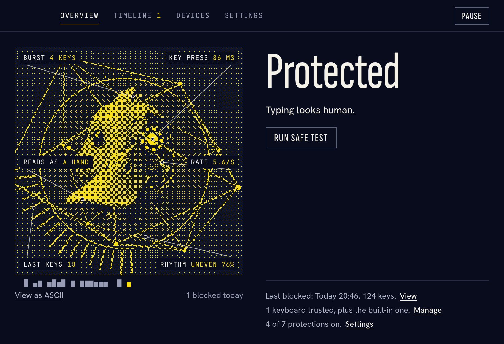
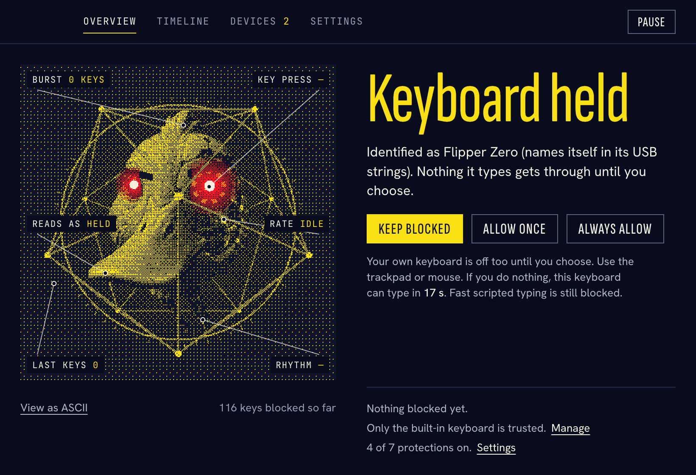

Burst —
Key press —
Reads as quiet
Rate idle
Last keys 0
Rhythm —
Burst —
Key press —
Reads as quiet
Rate idle
Last keys 0
Rhythm —
DuckyGuard 2.1 · Free Mac app · Out now
Keyboards that type too fast get stopped.
A USB gadget can claim to be a keyboard and type a command in under a second. DuckyGuard times every key on your Mac and blocks a burst that no hand could type.
The duck on this page is the one in the app. Type anything, or drag it: it reads only the timing of your keys, never which key, and nothing is stored or sent.
- Free and open source, MIT licence. Source on GitHub
- For Apple-silicon Macs on macOS 26.
- Tested on one Flipper Zero. Read the limits
Replay · a real Flipper Zero recording, played in your browser
Protected
No typing right now.
What reached the Mac
Nothing yet.
The timing is a real recording of a Flipper Zero typing a harmless sentence: 124 keys in 488 milliseconds. In the hardware test at this speed, 4 characters got through before the block, and this replay stops at the same point. It is a replay, not the app running on your Mac.
01 · How it works
It times every key.
macOS, like every operating system, trusts anything that says it is a keyboard. DuckyGuard does not look at what is typed. It looks at when.
Times every key
Two numbers for each key: the gap since the last one, and how long it was held down. A finger holds a key 60 to 150 milliseconds. The Flipper Zero in the test let go of each key within a millisecond or two.
Blocks the burst
When a burst is faster and more even than any hand, or its keys are let go faster than a finger can, the rest of that burst is blocked before it reaches any app. In five of six hardware runs, 3 to 5 characters got through first; in the sixth, 1.
Holds new keyboards
With Hold new keyboards on, a keyboard you have not trusted is held the moment it is plugged in. Nothing it types gets through until you choose Keep blocked, Allow once or Always allow, with the trackpad or mouse. Your own keyboard is off during the hold too. If nobody chooses, the hold ends after 20 seconds and the keyboard may type, still subject to the timing rules.
Says why, and keeps it on your Mac
Every block is explained in a sentence, with the rate, the rhythm, the key press time and the text of the burst. Incidents, trusted keyboards and settings stay on your Mac. The only network request is an opt-in, once-a-day update check.


- Protected
- Needs attention
- Alert
- Paused
02 · Proof
Tested on a real Flipper Zero.
0 of 124
keys got through with Hold new keyboards on, in each of 3 runs. The Flipper typed 1.2 to 3.5 seconds after it was plugged in, inside the hold, and every key it sent was blocked.
| What the Flipper typed | 2.0 | 2.1 |
|---|---|---|
| Full speed, about 4 ms per key | 11 | 4 |
| 100 ms per key, right after plug-in | 7 | 1* |
| 100 ms per key, 15 s after plug-in | 19 | 5 |
| Random 60 to 140 ms per key, right after plug-in | all 124 | 3 |
| Random 60 to 140 ms per key, 15 s after plug-in | all 124 | 5 |
* Typed within 30 seconds of an earlier block, which had already primed the detector. One run per row, one device, one Mac. Version 2.0 did not block the two random-timing runs at all. Rubber Ducky, Pico and O.MG devices have not been tested. The method, the recordings and the test harness are in the repository.
03 · Limits
What it does not do.
Read this before relying on it.
The first keys get through
On timing alone, 3 to 5 characters got through before the block in five of six hardware runs. A payload short enough to finish in that many keys is not stopped.
A payload that holds keys like a finger is not caught
A device that holds every key 60 ms or more and types 8 to 12 keys a second with random gaps looks human on every signal DuckyGuard measures. It also needs about a minute at the keyboard.
The hold lasts 20 seconds
If you do nothing, a held keyboard can type after the countdown, and a payload that waits out the hold faces the timing rules alone. Settings also offers 1 and 2 minutes.
Tested on one device
One Flipper Zero, on one Mac, one run per case. Not yet tested: payloads timed like a person's on hardware, a device that copies a trusted keyboard's USB identity, and Bluetooth keyboards.
Password fields
While a password field has focus, macOS Secure Input stops DuckyGuard from receiving keys, so it shows a notice and cannot block what is typed there.
A gadget that is also a mouse could click Allow
During a hold you choose with the trackpad or mouse, so a held keyboard cannot approve itself by typing. Mouse events are not scored, though. This has not been tested against a live payload.
It cannot prove which device typed
macOS does not tag a key with the keyboard it came from. An incident says "Probably from" a keyboard, and trusting a keyboard does not exempt it from the timing rules.
Some honest devices look like injectors
A security key that types a code, a barcode scanner and a macro key type the way injectors do. DuckyGuard will hold or block them. Not tested with any of these.
It keeps the text of what it blocks
A blocked burst is saved on your Mac, in a folder only you can read, so you can see what was attempted. If it blocks your own typing by mistake, that text is saved too. Nothing is sent anywhere.
Not an antivirus, not a firewall
It only looks at keystrokes and keyboards. It needs two macOS permissions, Input Monitoring and Accessibility; without Accessibility it can warn but not block.
macOS warns on first launch
The build has no Apple Developer ID and has not been through Apple's notarization check, so opening it the first time takes one extra step in System Settings › Privacy & Security.
04 · Get it
Download DuckyGuard.
 DuckyGuard · macOS 26 · Apple silicon · Free
DuckyGuard · macOS 26 · Apple silicon · Free
Free, and it runs on your Mac alone. After you install it, turn on Input Monitoring and Accessibility for DuckyGuard in System Settings › Privacy & Security. The first-run screen has a button for each.
macOS will block the first launch: open System Settings › Privacy & Security and choose Open Anyway. DMG SHA-256: 72155807b2bac5ac6b29c73b5b6fa00bf97ae23f09640d4867276773e2bf4ea1
Free, and it stays free.
No account, no paid tier. If it earns a place in your menu bar, you can chip in what you like. It unlocks nothing.